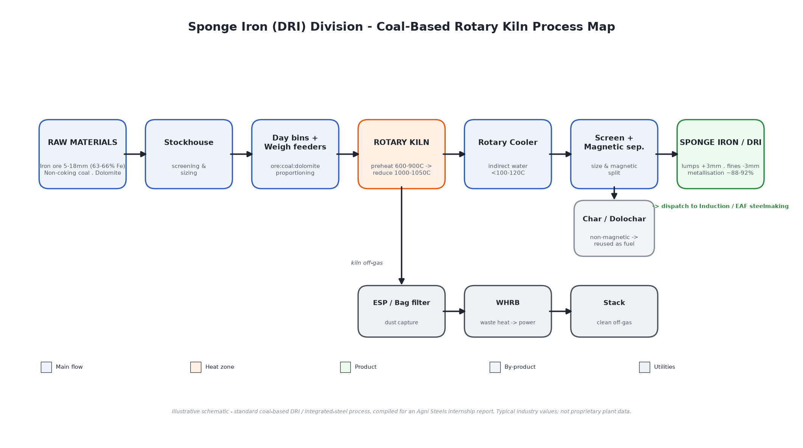
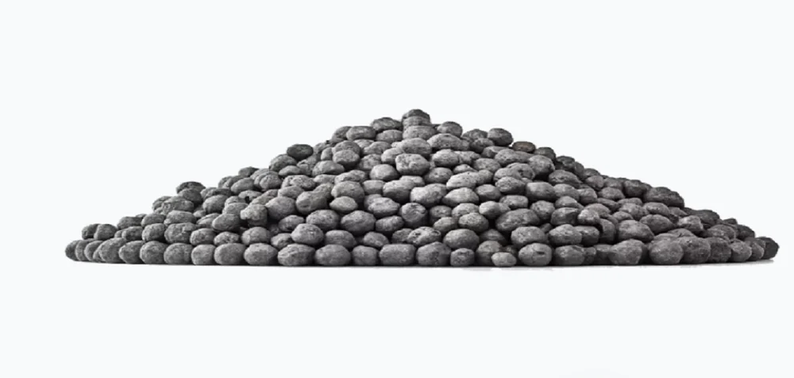
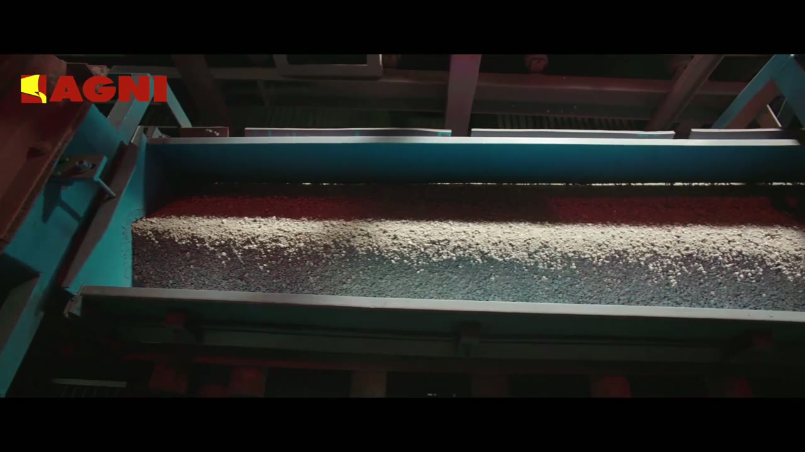

Process Study & Improvement · Coal-Based DRI Rotary Kiln · 100 TPD
Real plant-floor experience translated into operational and systems insight — the ground-level counterpart to the VGTPS 187 MW combined-cycle study. Two months inside a live coal-based Direct Reduction (DRI) plant: kiln process, lab QC, and the shift-floor discipline that keeps a 100 TPD unit running.
A 100 TPD coal-based rotary kiln DRI unit at Agni Steels' Sponge Iron Division, Perundurai — producing sponge iron as captive feedstock for downstream Induction Furnace (IF) / Electric Arc Furnace (EAF) steelmaking.
Production/Process intern attached to the sponge iron unit — shift-floor walkthroughs, lab QC work, control-room time on the DCS, and cross-functional coordination with raw materials, operations, QC and dispatch.
Map the process end to end, correlate kiln logs with lab QC across 40+ operating days, and turn what operators and engineers see every shift into a structured, data-backed improvement proposal.
Studied the coal-based DRI rotary kiln process at the 100 TPD plant, mapping reduction zones and temperature profiles to product metallisation across 40+ operating days — preheat through reduction to discharge.
Analysed root causes of metallisation shortfalls and kiln accretion by cross-referencing shift kiln logs against lab QC results (FeM/FeT) — turning two separate paper trails into one diagnostic picture.
Performed wet-chemical assays (FeM/FeT) and magnetic separation tests to grade sponge iron quality — the same lab discipline that ultimately gates whether a batch is fit to ship.
A focused 2-month study of kiln accretion / coal-interaction patterns, closing with a data-backed proposal — the same Pareto-the-dominant-constraint logic applied at VGTPS and on the kiln floor.
Worked directly with DCS control screens, the thermocouple network monitoring kiln shell temperature, and weigh-feeder logic governing the ore–coal–dolomite feed ratio.
Worked across raw materials, operations, QC and dispatch teams under live shift-floor safety discipline — the operational glue that a process study has to respect, not just observe.



Two months of shift-floor observation, lab work and kiln-log correlation closed with a data-backed improvement proposal on kiln accretion and coal interaction — the same translation of plant reality into a decision document that sits behind every project on this site. The full account — process maps, root-cause findings, and the proposal itself — is in the detailed internship report.